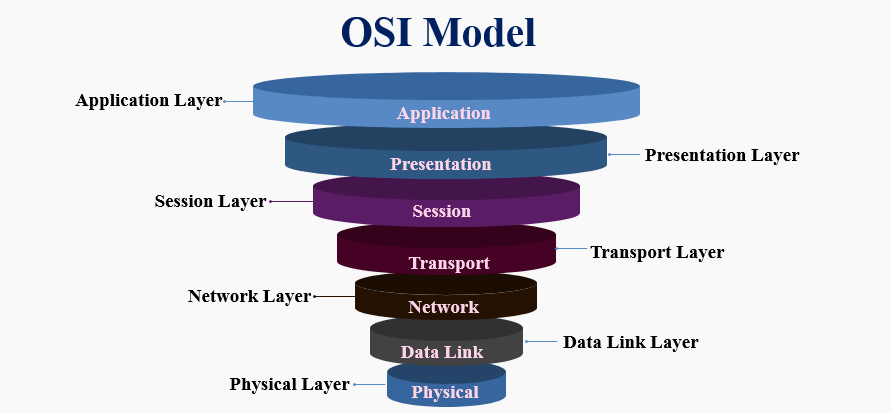

Ağlara Giriş
Bilgisayar ağları, cihazlar arasında veri alışverişini sağlayan iletişim sistemleridir. Bu yapılar, bilgi paylaşımı, kaynak kullanımı ve merkezi kontrol gibi temel işlevleri yerine getirir.
Modern ağlar, internet altyapısının temelini oluşturarak dijital iletişimin sürekliliğini sağlar.
OSI modeli, bilgisayar ağlarındaki iletişimi 7 katmana ayıran bir modeldir. Her katman, belirli bir görevi üstlenir ve alttaki katmana veri iletirken onu uygun formata dönüştürür.

Fiziksel Katman
Data Katmanı Katman
Ağ Katmanı Katman
Transport Katman
Uygulama Katmanları
Sorular